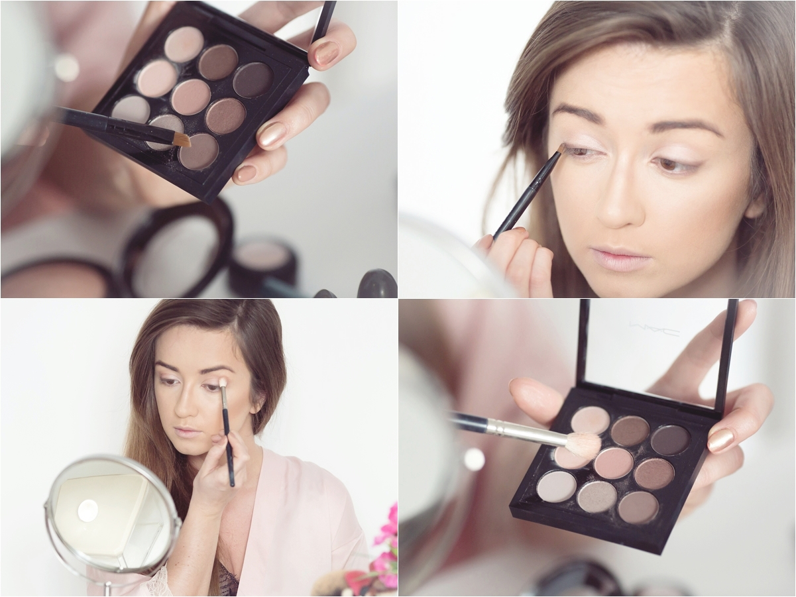
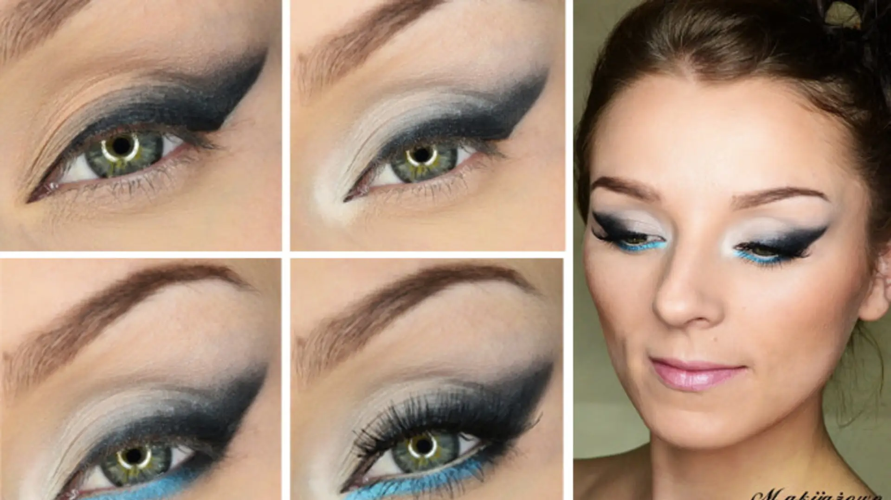
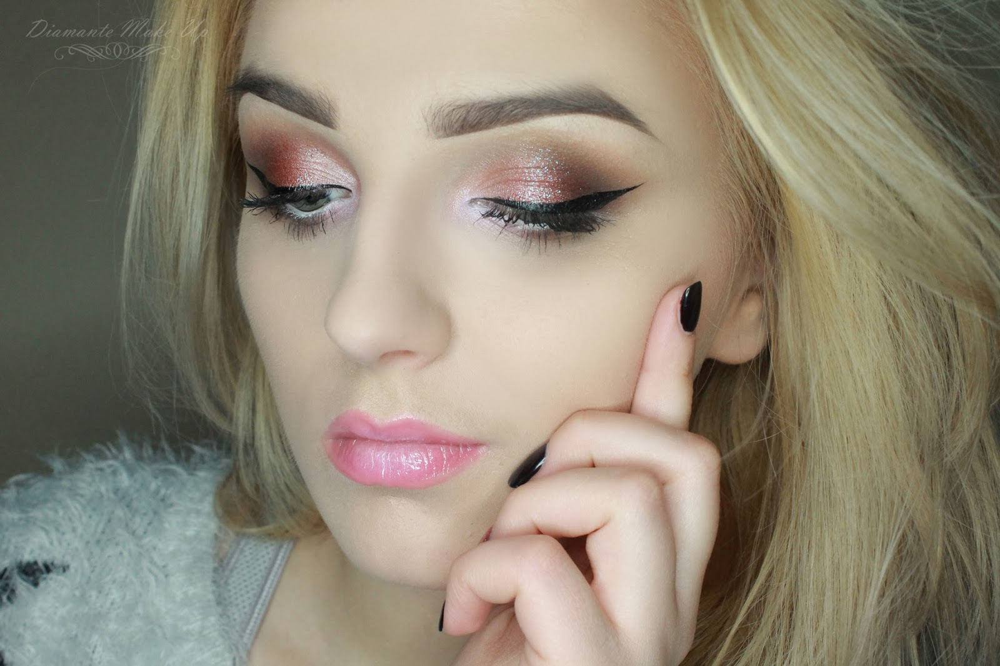

Witaj na stronie o makijażu
Zapraszam do poznania różnych stylów makijażu, quizu oraz galerii zdjęć i filmów.
Rozwijane sekcje (Akordeon)
Opis makijażu dziennego, techniki i porady.
Opis makijażu wieczorowego, techniki i porady.
Galeria zdjęć i filmów



Harmonogram makijażu
| Dzień | Makijaż | Opis |
|---|---|---|
| Poniedziałek | Dzienny | Naturalny i lekki makijaż na co dzień |
| Środa | Wieczorowy | Elegancki makijaż na wieczorne wyjścia |
| Piątek | Ślubny | Specjalny makijaż na uroczystości |